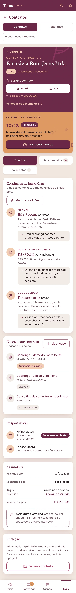
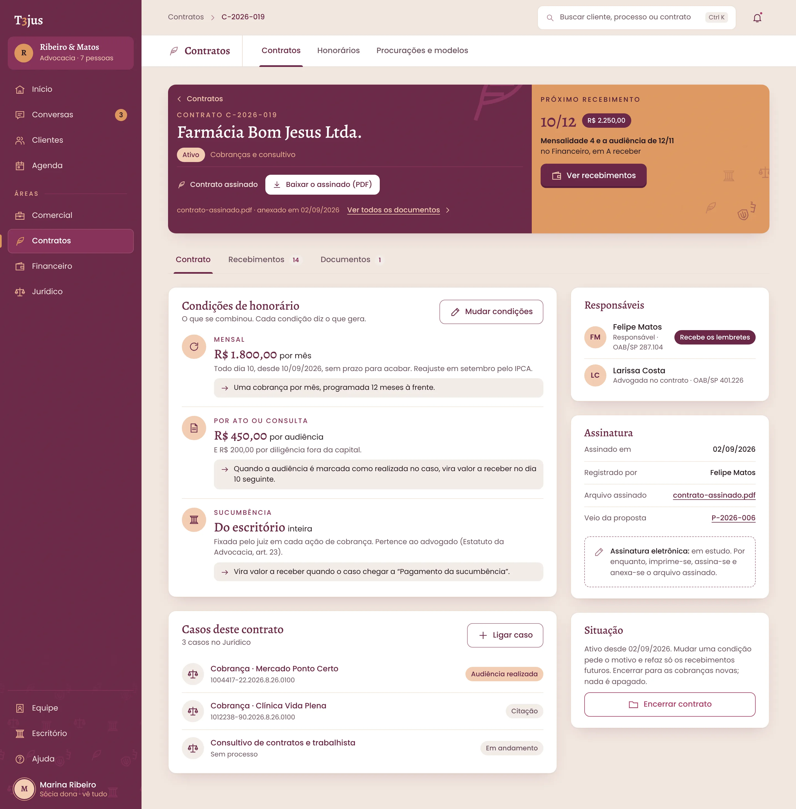
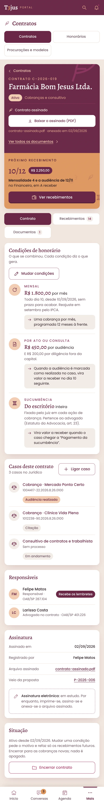
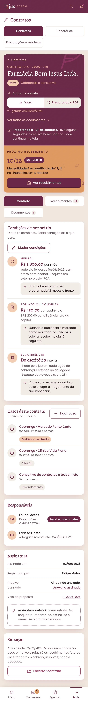
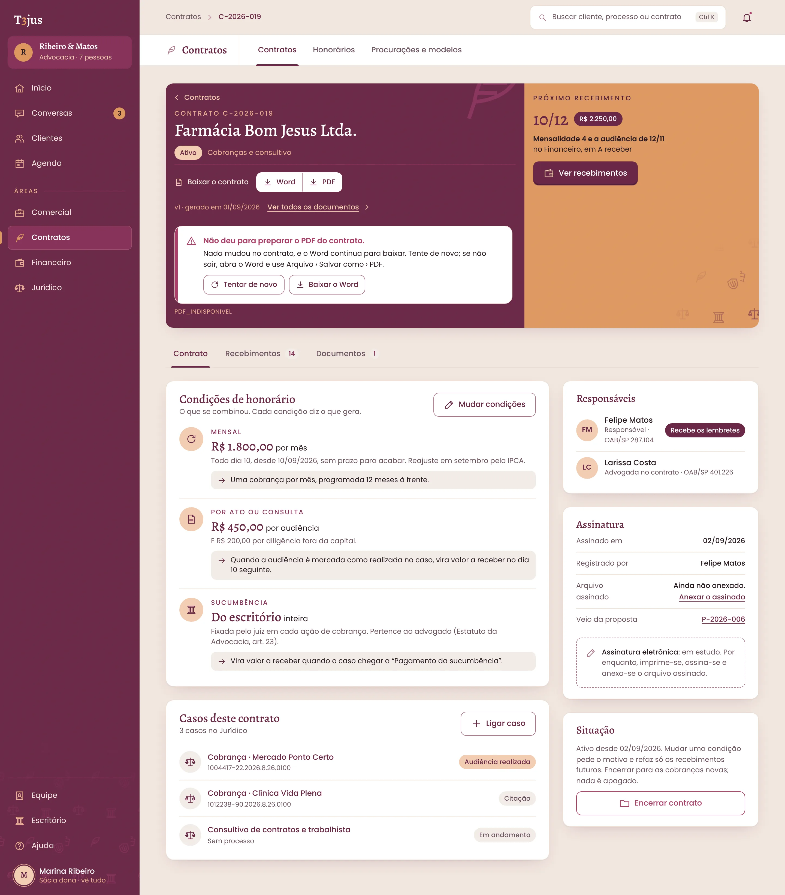
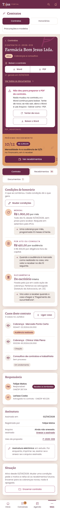
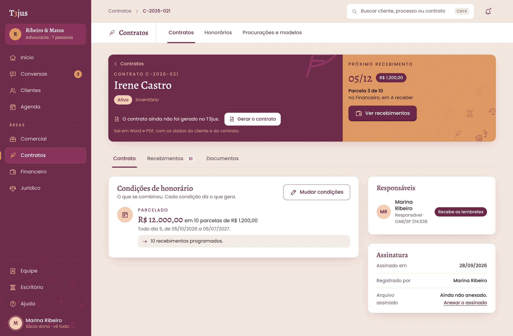
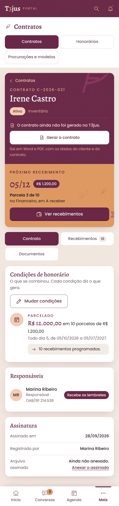

Contratos › ficha do contrato › cabeçalho (todas as abas)
Baixar o contrato na ficha
A Carol abriu a aba Contrato e não achou onde baixar o contrato em PDF: o download aprovado no D23 fica só na aba Documentos. Aqui, o contrato em Word e PDF passa a ficar no cabeçalho vinho da ficha, que aparece nas três abas. Nada mais muda na ficha. Clique numa imagem para abrir o HTML naquele estado. As decisões e as perguntas estão em NOTAS.md.
1. Contrato ativo com o contrato gerado, sem o assinado
No cabeçalho vinho, abaixo do selo, a linha “Baixar o contrato” com Word e PDF colados, da versão mais recente gerada (v1 · gerado em 01/09/2026). Embaixo, “Ver todos os documentos” leva à aba Documentos. O cabeçalho aparece nas três abas.

2. Contrato com o assinado anexado
O que vale é o assinado: a linha vira “Contrato assinado” com um botão só, “Baixar o assinado (PDF)”, e diz o arquivo e a data. O Word e o PDF sem assinatura ficam na aba Documentos, pelo link.


3. Preparando o PDF
O botão PDF vira “Preparando o PDF” (aria-disabled; o foco fica nele) e uma linha de situação (role=status) diz que o arquivo baixa sozinho. O Word segue livre.

4. Erro ao preparar o PDF
Aviso preso à linha (role=alert), no tom aprovado: o que aconteceu, o que continua igual (o Word baixa) e o que fazer, com Tentar de novo e Baixar o Word. Código PDF_INDISPONIVEL.


5. Contrato sem documento gerado
Irene Castro, ativo, sem contrato gerado nem assinado anexado. A linha diz “O contrato ainda não foi gerado no T3jus.” e oferece “Gerar o contrato”, que abre /contratos/modelos/gerar?contrato=


A trilha no topo
Hoje o sistema repete o nome da área e da seção. A trilha corrigida mostra a área e o número, como nos desenhos aprovados; é a que aparece no topo de todas as capturas acima.
- Hoje
Contratos › Contratos › C-2026-001- Corrigida
- Contratos › C-2026-001